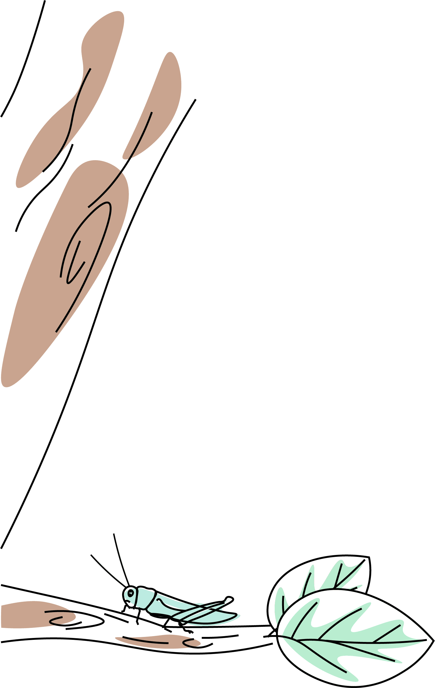
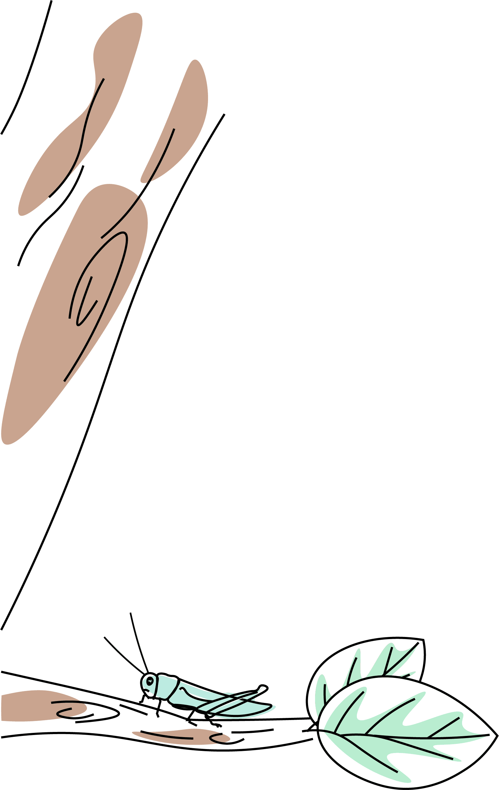

“Stay Hungry, Stay Foolish”
前端: 前端开发是创建Web或app视觉界面呈现给用户的过程通过HTML, CSS及JavaScript以及衍生出来的各种技术、框架、解决方案, 实现互联网产品的用户界面交互。
后端: 通常也称服务器端开发。不对用户显示, 负责处理前端的请求, 进行逻辑处理和数据交互。
客户端: 移动应用开发是为了小型、无线计算设备编写软件的流程和程序的集合, 例如智能手机或平板电脑。

“好的软件的特征是，明明没用过，但总觉得用过似的。”
PM是针对某一项或是某一类的产品进行规划和管理的人员。PM需要拥有缜密的产品逻辑思维, 研究用户心理, 负责产品的整个生命周期。PM参与产品的UI和交互设计, 为设计和开发确定产品原型, 能够将产品变得有个性, 操作变得舒适简单、自由。PM需要一定的文档能力和沟通能力, 能够在团队合作的过程中跟各个角色进行有效沟通。

"TECH OTAKUS SAVE THE WORLD"
对游戏开发的热爱和追求, 使我们相聚于此。涉及计算机图形学的学习, 我们使用物理模拟引擎Unity开发我们所追求的世界, 一个故事, 一个角色, 在我们的世界里改变现实, 创造新的可能, 我们参与, 我们改变, 我们创造...

“路漫漫其修远兮, 非大毅力者不能”
我们主要学习Web安全和二进制安全。在Web安全中我们将学习和实践Web漏洞挖掘技术, 也将探索和讨论Web安全实践的方法。在二进制安全中我们专注于分析和防御与计算机程序、系统相关的威胁, 同时实践漏洞分析和修补。耐心和钻研缺一不可。

每周我们会举行一次技术例会, 用来汇报我们的学习内容, 供成员之间交流学习。

多元化是我们的特色。在这里, 你可以拥有多种方向选择, 前后端、安全、AI、产品/设计、游戏等。

耐心、毅力是我们必备的品质, 每周我们会至少花30小时在实验室中, 以保证技术的精进。

热爱计算机, 具有geek精神, 喜欢DIY, 动手能力较强
有编程/算法/硬件基础为佳(有作品可附上)
有足够的空余时间, 热爱思考, 对事物有自己的见解
ps:非新思路统招只有通过发送邮件自我介绍后, 收到邮件回执后才会被 允许进群, 在读学生, 都可邮件到newthread_geek@outlook.com报名 加入(信中需备注个人基本信息以及意向方向, 此招新活动为长期招新)


 

拥有好奇之心, 改变之力, 爱钻研, 能折腾。
按照惯例, 正式招新时间是在9月下旬~10月上旬, 不过今年会有一些改动, 笔试地点一般在9号教学楼。如果想要了解我们, 可以加入我们的QQ群, 招新具体的安排/变动会在招新群通知。
嗯...我们一共有一轮笔试和两轮面试。权衡技术、经验和学习能力, 第一轮是一些视野性的题目, 淘汰率并不高。第二轮单独面试, 根据你的笔试提出技术相关的问题、兴趣爱好、个人看法。最后一轮群面, 首先问及时间分配上的问题, 其次也会向你提出各种奇怪的问题。这一轮中许多题目其实并不难, 也无标准答案, 重在考察同学们在压力下的逻辑思维。全部通过成为预备成员啦。
在考核期间每人会拥有一位'长者'带你入门, 学习技术与知识, 交流经验与想法。完成每周的新人任务后再进行一次考核筛选后就可以成为Geek组正式成员啦! 在考核期必须满足每周30个小时在实验室哦, 所以考核期也不可以懈怠哦！
一对一的新人指引, 每一个成员都有会一个mentor, 带你初入门槛, 与你一同成长, 组内管理较宽松, 在尊重其他人的前提下可以尽情发挥自己的个性。打破平淡, 与同样疯狂的人把疯狂的idea实现, 磨砺耐性、培养思维、成就梦想。Lab设备/网络资源充足, 闲暇之余也有组织活动。更有许多的故事等你来听~
你要知道大学是一个可以自由安排自己学习生活的地方。如果你想在上课之余充实自己、激励自己, 最好的方法就是和比自己更优秀的人在一起。团队不缺优秀的人, 而我们也期待同样优秀的你, 让我们一起前进! 小组里也有不少保研, 考研的前辈们, 大部分都能找到一个平衡点, 而且团队的经历对你日后读研, 工作都大有裨益。
我们希望你有很强的自学能力, 同时关注新事物、新技术, 喜欢挑战, 逻辑性强, 善于和各种文化的人合作。“每个人都可以做自己想做的事情, 每个人的方向不一样。如果你想做产品或有不错的idea, 那么就可以找志同道合的人一起合作。”